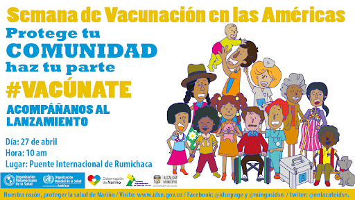
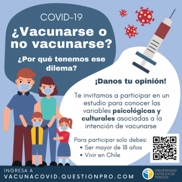

¿como proteger las vacunas a las personas y las comunidades?

Cuando una persona se vacuna contra una enfermedad, su riesgo de infección también se reduce, por lo que es mucho menos probable que transmita el virus o la bacteria a otras personas. Cuantas más personas de una comunidad se vacunen habrá menos personas vulnerables, y de ese modo se reducirán las probabilidades de que una persona infectada transmita el agente patógeno a otros. La inmunidad colectiva no implica que las propias personas que no estén vacunadas o que no hayan presentado la infección sean inmunes. Por el contrario, la inmunidad colectiva ocurre cuando las personas que no son inmunes pero viven en una comunidad en la que la proporción de inmunidad es alta tienen un menor riesgo de contraer una enfermedad en comparación con las personas que no son inmunes y viven en una comunidad en la que la proporción de inmunidad es baja.
En las comunidades en las que la proporción de inmunidad es alta, las personas que no son inmunes tienen un menor riesgo de contraer la enfermedad en comparación con el riesgo que normalmente tendrían, pero esa reducción del riesgo deriva de la inmunidad de las personas de la comunidad en la que viven no del hecho de que ellas sean inmunes. Incluso después de que la inmunidad de grupo se alcance por primera vez y se observe que las personas que no están vacunadas tienen un menor riesgo de padecer la enfermedad, es posible disminuir aún más el riesgo si se aumenta la cobertura de vacunación. En los casos en los que la cobertura vacunal es muy amplia, es posible que las personas que no son inmunes lleguen a tener un riesgo de contraer la enfermedad parecido al de aquellos que son verdaderamente inmunes. Por ejemplo, las bacterias que trasmiten el tétanos están en el medio ambiente, no en otras personas, por lo tanto, las personas que no están vacunadas no cuentan con protección contra la enfermedad, aun cuando la mayoría de la comunidad se haya vacunado.
¿porque debo vacunarme?

Si no nos vacunamos, corremos el riesgo de contraer enfermedades graves como el sarampión, la meningitis, la neumonía, el tétanos y la poliomielitis, muchas de las cuales pueden ser discapacitantes y mortales. Según los cálculos de la OMS, las vacunas salvan la vida a entre dos y tres millones de personas cada año.